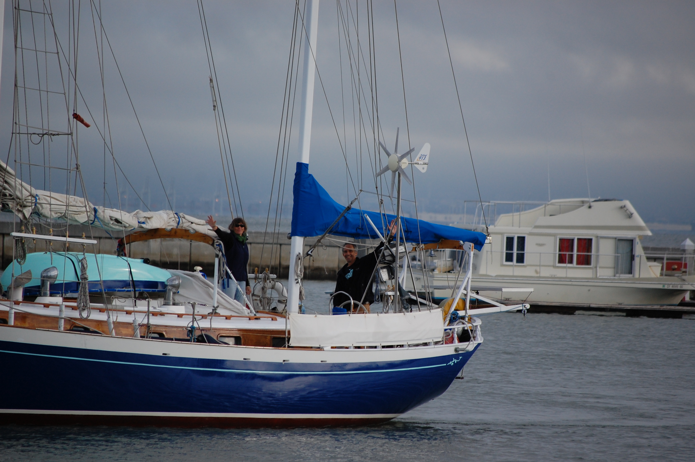

|
"Don Pedro" is the name of the boat...
|  |
This is the tale of a trip in the Pacific ocean.
It took us from San Francisco in California to the Marquesas, then to the Tuamotu Archipelago, the Society Islands, Tongareva in the Cook Islands, Kiritimati in the Kiribati Republic, then Hawai'i, and back to San Francisco. (Check the Map in the navigation menu)
It contains text, pictures, video clips, weather faxes, maps, all the kind of things you'd need to do it for yourself, in case you're planning to do something along the same lines.
This kind of story has already been told many times, there is nothing really new or revolutionary in it.
One of the goals - beside getting connected with friends and family - of those few web pages was to gather the documents we did not find on other web sites when we were preparing our trip.
All images are (or should be) clickable, to enlarge them.
When a picture has a at the top and the bottom, it means that the frame contains several pictures, across which you can scroll by clicking the numbers at the bottom of the frame.
The boat is a 42' ketch built in Honk-Kong in 1976, which has also been our home during the 6 years preceding the trip. Details about the boat can be found on the boat's web site.
We were a crew of two for this trip.
To access the content, use the navigation menu, accessible from the hamburger (≡) at the top left of this page.
The map will also lead you to the right chapters. The calendar does the same thing.
|
When you see in the text some
, it means you can visualize our sail combination by moving the mouse over those
words. Try it!
Enjoy the reading! The trip's track is available for Google Earth, in KML format.
If you have Google Earth on your system, just download the file from the link, and open it in
Google Earth.
2020: Google Maps is no longer a free service, if you wish to use internal APIs.
|